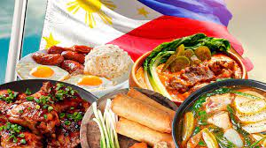

Experience the rich and diverse taste of Filipino cuisine
Filipino cuisine is a delightful blend of flavors, influenced by a rich history and diverse cultural traditions. From savory adobo to sweet halo-halo, each dish tells a unique story.
Explore the mouth-watering world of Filipino cuisine with these popular dishes:
Try your hand at cooking these delicious Filipino recipes at home:
Have questions or want to share your favorite Filipino recipes? Reach out to us!
Email: info@filipinocuisine.com